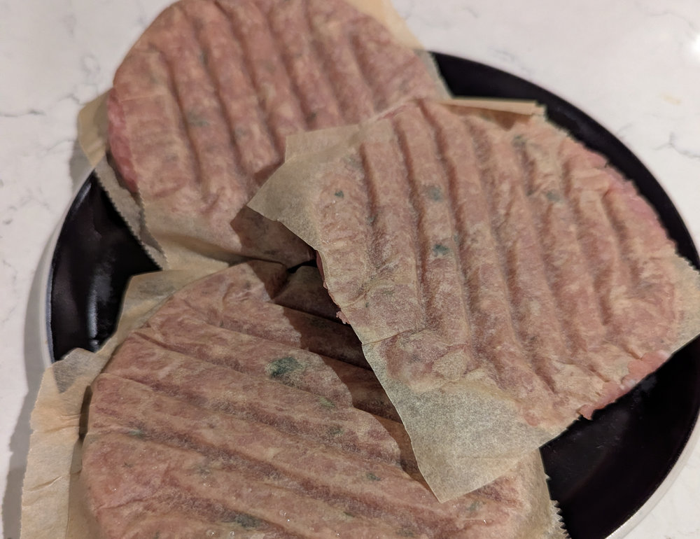

Pork Sausage Breakfast Patties
 Makes 8 patties
Makes 8 patties 20 minutes
20 minutes Source
Source Meat
Meat
Classic pork sausage flavour in patty form, made with a simple spice blend — no breadcrumbs, no fillers.

Sausage patties
500gpork mince10-15fresh sage leaves1/2 tspdried thyme, crushed between fingers1 tsponion powder1/2 tspgarlic powder1/2 tspwhite pepper1/2 tspfine sea salt1/2 tspsugar
Combine all ingredients in the bowl of your stand mixer and mix well on medium-low speed for a few mins. Do not over-mix as you will end up with a paste rather than a meat mix.
Cut 16 squares of parchment paper approx 10cm on a side.
Divide the meat mixture into 8 equal portions and shape into balls around the size of a cricket ball.
Using a burger press, press the balls between two parchment paper squares into thin (5mm) patties. This allows them to be cooked straight from frozen.
Freeze on a flat tray immediately for 2 hours. Store in a plastic container or food bag in the freezer for up to 3 months.
To Cook
Cook from frozen in a non stick frying pan for 2-4 mins per side until deep golden brown.
Serve in a toasted bagel topped with a cheese slice and a fried egg.